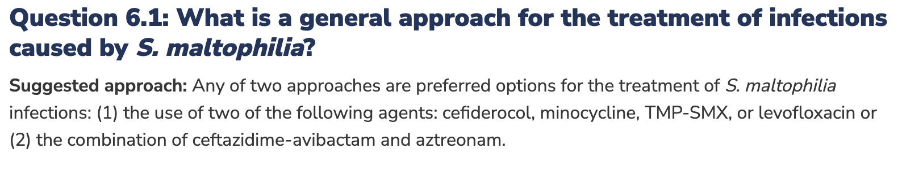

TL;DR
I think everyone should learn the intuition of LLM, prompt engineering, RAG, agents, etc. The concept itself and with some trial and error will provide users a renewed perspective of how these things work, how helpful and beneficial it can be for us, how it serves as a tool for learning and not a replacement. The simplest & most straightforward way of learning is using GPT4All GUI LangChain’s tutorial, use a Local LLM, and then give it a go! Yes most of these are in python but it shouldn’t prevent R user like me to use it in R via reticulate!
Disclaimer
This is mainly for data science educationa purpose only. This is NOT a medical advice, nor is it a medical education. Some medical statements here may be inaccurate. If you find any error in this article, please feel free to educate me.
Motivation
I have been wanting to learn LLM for a while now. My first attempt was an utter failure. Not being proficient in python, needing to install a bunch of python packages, different error lingo, were quite discouraging. That said, it’s always good to try something and fail, and then pick it up again some other time and invest more time chunks into learning the individual portions of it. This is exactly what happened! I’m glad that it did and now I have a better understanding of it.
What really catalyzed this learning process was the recent AI Summit Conference. They provided a Prompt Enigeering beginner session and that really helped me to want to learn more about LLM. However, most LLM sessions, books, all involve paid version of API such as OpenAI GPT3.5/4o, Claude, Azure, etc, I wanted something local and does not involve paying for each token, in my case erroneous token ü§£, sent to the API and get charged for my mistakes. Then, we stumbled upon GPT4All. This was really something that kicked start the process of learning without requiring ANY codes! Just download it, and it has a GUI, attach local files, and then chat away, without internet!
Below is a GIF of the website and a snapshot of the GUI
We won’t be going through the details of using GPT4All here, it is quite intuitive. They also have a discord channel if you have questions. Very nice and helpful people. I recently learnt that GPT4All does not have embedding implemented yet on the python SDK through the channel. The most straightforward way to learn how to run LLM locally is this in 3 simple ways:
- Download the app
- Open the app, select model to download
- Attach folder on LocalDoc (this can be tricky if document is too large/long, but if you use nomic.ai’s embedding, which requires sign up and API key, it’s very fast).
- Then start chat, attach the LocalDoc folder of interest, and start chatting!
You will also need to change setting of n_ctx (tokens that can be sent) and max_tokens (tokens that LLM returns response) if your question is long or want longer answer. I did not tweak other things in here much, I didn’t find the response was much accurate, though it’s quick. Since it doesn’t allow a whole lots of customization, I went to LangChain instead since mainstream uses this a lot and I can find more tutorial in that setting. However, this really got me started and am forever grateful I found this and its community. Another thing that the community pointed out was that if the prompt template has something like
### Human:
%1
### Assistant:
That’s not the right template, more so a placeholder and you’d have to enter the model specific prompt template for it to work, such as for Llama 3 system prompt template.
<|im_start|>system
Write your system prompt here<|im_end|>
With LangChain, you don’t need the above, most of them are done for you! More to come.
ü¶ú‚õìÔ∏è‚Äçüí•LangChain
The reasons I chose LangChain to learn were because of standardization of the lingo, functions, workflow etc. It reminds me a whole lot of TidyModels. It has a specific workflow, but incorporates all the cool engines (ML methods) into the workflow. It doesn’t matter whether you’re using Llama 3, WizardLM, Gemma2 etc, the workflow, functions are all the same. Also, there are lot of resources out there that uses this and that is extremely helpful for me to start. Not to mention, the documentation of LangChain is fantastic! Because this field is evolving so swiftly some of the tutorial codes are deprecated but the documentations offer the current function and points you to the right direction. Definitely enjoyed reading through it when I stumbled upoen problem. ❤️
That said, it does not come without LOTS and LOTS of trial and error. Below I’ll try to document the things I need for this to run on R. It may not be extensive, but if you are stuck in any of the steps below please let me know, I’ll try to see if I can reproduce it and help you troubleshoot if I can. Here, I am using LlamaCpp because it is an efficient, open-source C++ implementation of Meta’s LLaMA language model, designed for CPU-based inference. It allows users to run large language models on consumer-grade hardware with relatively low memory requirements, thanks to its support for various quantization levels
Prerequisite
I assume you have python and reticulate installed, and your reticulate is pointing towards the python you use to install the following packages in python
pip install --upgrade langchain langchain-community langchain_core langchain_huggingface llama-cpp-python faiss-cpu
Sorry if I missed anything. If when you run the code you noticed some error where packages not found, you can use that to troubleshoot. Let me know if I missed anything, I’ll modify.
Code In Action - Explained
Load Packages
library(reticulate)
library(tidyverse)
# load modules
langchain_community <- import("langchain_community")
langchain <- import("langchain")
langchain_core <- import("langchain_core")
langchain_huggingface <- import("langchain_huggingface")
# load functions
### Documents
DirectoryLoader <- langchain_community$document_loaders$directory$DirectoryLoader
PyPDFLoader <- langchain_community$document_loaders$PyPDFLoader
RecursiveCharacterTextSplitter <- langchain$text_splitter$RecursiveCharacterTextSplitter
HuggingFaceEmbeddings <- langchain_huggingface$HuggingFaceEmbeddings
### Embedding / Vectorstorage / Retriever
FAISS <- langchain_community$vectorstores$FAISS
### Model
LlamaCpp <- langchain_community$llms$LlamaCpp
CallbackManager <- langchain_core$callbacks$CallbackManager
StreamingStdOutCallbackHandler <- langchain_core$callbacks$StreamingStdOutCallbackHandler
### Template
PromptTemplate <- langchain$prompts$PromptTemplate
ChatPromptTemplate <- langchain_core$prompts$ChatPromptTemplate
### Chain
create_retrieval_chain <- langchain$chains$create_retrieval_chain
create_stuff_documents_chain <- langchain$chains$combine_documents$create_stuff_documents_chain
This is quite self-explainatory. If you have questions, copy and paste on LLM and have it explain. Make sure to get your copy of pdf here
Load & Embed Document
loader = PyPDFLoader("amr-guidance-4.0.pdf")
documents = loader$load()
text_splitter = RecursiveCharacterTextSplitter(chunk_size=1000, chunk_overlap=200)
docs = text_splitter$split_documents(documents)
vectorstore = FAISS$from_documents(documents=docs, embedding=HuggingFaceEmbeddings())
retriever = vectorstore$as_retriever()
Explaination:
- Loads the contents of the PDF file named “amr-guidance-4.0.pdf”.
- Extracts the text content from the loaded PDF and stores it in the documents variable.
- Creates a text splitter that will divide the text into chunks of approximately 1000 characters each, with an overlap of 200 characters between adjacent chunks (to maintain context).
- Applies the splitter to the documents variable, breaking the text into smaller chunks stored in the docs variable.
- Initializes an embedding model from the Hugging Face library. Embeddings are numerical representations of text that capture semantic meaning.
- Creates a FAISS vector store (vectorstore). It takes the split text chunks (docs) and converts them into embeddings using the specified HuggingFaceEmbeddings model. These embeddings are then stored in the vector store.
- Creates a retriever object from the vectorstore. This retriever allows you to efficiently search the vector store for text chunks that are semantically similar to a given query.
Embedding, huh?
Embedding is a technique used in natural language processing (NLP) to represent words, sentences, or documents as numerical vectors. These vectors capture the semantic meaning of the text and can be used for various NLP tasks, such as similarity search, text classification, and language generation. In this case, we are using the Hugging Face library to generate embeddings for the text chunks extracted from the PDF document.
This tutorial has a great description of what embedding model -> vector storage means.
Example of embedding vector
embedding = HuggingFaceEmbeddings()
embedding$embed_query(text="can i use gentamicin for pseudomonas infection")

Then this embedding vector will be compared with all of the chunk vectors using squared L2 distance (Euclidean distance):
The actual euclidean distance we need to square-root it but here FAISS has omitted it for computational efficiency. The lower the number the more similar the 2 vectors are, it works the same regardless of square-rooting or not. More details on the proof
Return the Best (lowest squared L2) Similarity
vectorstore$similarity_search_with_score(query = "can i use gentamicin for pseudomonas infection", k=as.integer(1))
 #### Now let’s calculate it by hand!
#### Now let’s calculate it by hand!
query_v <- embedding$embed_query(text="can i use gentamicin for pseudomonas infection")
page53_v <- embedding$embed_query(text=docs[[167]]$page_content)
sum((query_v - page53_v)^2)
## [1] 0.7473773
YES !!! Same number, awesome!!! ‚úÖüôåüëç
Model
llm = LlamaCpp(
model_path="wizardlm-13b-v1.2.Q5_K_M.gguf",
streaming=TRUE,
callback_manager=CallbackManager(handlers = list(StreamingStdOutCallbackHandler())),
n_ctx = as.integer(2048),
max_tokens = as.integer(1024),
temperature = 0,
verbose = F)
Explaination:
- Initializes a LlamaCpp object from the langchain.llms module
- select path of GGUF model (see below how to download)
- Enables streaming output, allowing the model to generate text incrementally and send it back as it’s produced, rather than waiting for the entire generation to finish.
- Creates a CallbackManager object, which allows you to register callbacks (functions) to be executed during the text generation process. StreamingStdOutCallbackHandler. This handler prints the generated tokens directly to the standard output (your console) as they are produced, providing a real-time view of the generation.
- Sets the maximum context window size to 2048 tokens. The context window is the amount of text the model can “remember” and use to generate its output.
- Limits the maximum number of tokens in the model’s output to 1024. This prevents the model from generating overly long responses.
- Controls the “creativity” or randomness of the model’s output. A temperature of 0 makes the model deterministic, always choosing the most likely next token.
- Disables verbose logging from the LlamaCpp library. I disabled this to make it more aesthetically nice for the blog, you should set this to TRUE to see detailed output during the generation process.
How to Download GGUF models?
- Go to Hugging Face, here I have pre-selected
text-generation model and GGUF library for you
- Select a model that piqued your interest
- Select “Files and versions”

- Select a model to download and download. If the gguf contains part 1 of 2, make sure to download both parts and select the first part when you’re assigning the model.
Please note that certain LLM such as Llama, Gemma etc, requires you to request permission to use their models. It is quite straightforward, read through their policy, request it by filling out information, wait for approval then you’re in!
Prompt
system_prompt = "
You are an expert for question-answering tasks.
Use the following pieces of retrieved context to answer the question.
When answering, also make sure to state the reason or rationale for that answer.
Then question that reason or rationale critically once with a sentence.
Then provide an answer to the critical appraisal.
If you don't know the answer, say that you don't know.
{context}
"
prompt = ChatPromptTemplate$from_messages(
list(
tuple("system",system_prompt),
tuple("user",paste0("Question: ","{input}")),
tuple("assistant",""))
)
prompt

Make sure the system prompt goes to SystemMessage. I had to debug this for sometime and finally realized that the ChatPromptTemplate$from_messages function takes a list of tuples in order for it to work. Found this out by reading LangChain documentation. üôå To be quite honest, I really find their documentation to be very helpful for me!
Chain / Runnables ‚õìÔ∏è‚Äçüí•
question_answer_chain = create_stuff_documents_chain(llm, prompt)
rag_chain = create_retrieval_chain(retriever, question_answer_chain)
Explaination:
- create_stuff_documents_chain(): This function from LangChain creates a chain specifically designed for question-answering tasks. Your model llm will be used to generate answers. prompt: A PromptTemplate that guides the LLM on how to structure its response. It sets up a chain that takes a question and some documents as input. It passes the question and documents to your LLM. The LLM uses the prompt to generate an answer based on the given information.
- create_retrieval_chain()·: This function from LangChain creates a RAG chain. retriever: Your retriever object (e.g., the one you created from your vector store). This is responsible for fetching relevant documents based on a query. question_answer_chain: The chain you just created in the previous line, which will be used to generate answers from the retrieved documents.
What this line does:
Then, we are ready to ask our questions!
result = rag_chain$invoke(dict("input"= "What guideline are we looking at today?"))
result
 The output was saved in
The output was saved in result as a list. As you can see, the first output was the question, 2nd,3rd,4th were the context that our retriever found most similar to our question. Lastly we have our answer ‚ÄúGuidance on the Management of Antimicrobial Resistance‚Äù ‚ù§Ô∏è‚ù§Ô∏è‚ù§Ô∏è‚úÖThough it seemed to have missed ‚ÄúGram Negative‚Äù ü§£
Create A Vector of Questions
Let’s create a vector of questions and then run pass our LLM and see what are the responses.
questions = c("What is the preferred treatment of CRE?",
"What is the preferred treatment of ESBL-E?",
"Can we use fosfomycin in ESBL Klebsiella?",
"Can we use fosfomycin in ESBL Ecoli?",
"What is the preferred treatment of stenotrophomonas?",
"What is the preferred treatment of DTR Pseudomonas?",
"Which organisms require two active agent when susceptibility is known?",
"Can we use gentamicin in pseudomonas infection?",
"Can we use tobramycin to treat pseudomonas infection?",
"Why is there carbapenemase non-producing organism?",
"Can we use oral antibiotics for any of these MDRO?",
"What is the preferred treatment of MRSA?",
"What is the preferred treatment of CRAB?",
"Can fosofmycin be used for pyelonephritis?",
"Is IV antibiotics better than oral antibiotics?")
response = vector(mode = "character", length = length(questions))
source = vector(mode = "character", length = length(questions))
for (i in 1:length(questions)) {
cat(rep("\n",100))
print(paste0("Question: ", questions[i]))
result = rag_chain$invoke(dict("input" = questions[i]))
response[i] = result$answer
source[i] = map_chr(.x=result$context,.f=~paste(.x)) |> paste(collapse = "\n\n##########\n\n")
Sys.sleep(10)
}
Explaination:
- questions variable contains a vector of the questions we’re interested in asking
- create response and source empty vectors
- create a for loop:
- clear console create by creatining lots of new lines
- print the question
- invoke the i-th question
- save the ith response to ith response vector
- save the ith source to ith source vector (this will tell us where the RAG got the source from our documents), separate each source with \n\n##########\n\n
- sleep for 10s, otherwise our machine will heat up quite fast; this also will help us capture screen of the response
Ready for the response? Let‚Äôs go! üèÉ
Questions to Our LLM
Anything in baby blue highlight is LLM answer output, light green highlight is the source RAG found top 4 similarity to the question. If the GIF is too fast to follow, you can look at the actual output. I didn’t return all sources, unless necessary to investigate. The first question will have everything outputted.
Below might be a bit clinical, please feel free to glance through the first few examples and move on if you’re not interested.
What is the preferred treatment of CRE?
Response:

The preferred treatment for infections outside of the urinary tract caused by Carbapenem-Resistant Enterobacteriaceae (CRE) that produce Klebsiella pneumoniae carbapenemase (KPC) depends on several factors, including the specific type of infection, the patient's clinical status, and the susceptibility patterns of the CRE isolate. According to the guidelines provided, the preferred antibiotics for such infections include:
1. Ceftazidime-avibactam, which inhibits KPC enzymes and other β-lactamases.
2. Meropenem-vaborbactam, where vaborbactam stabilizes meropenem against certain β-lactamases.
3. Imipenem-cilastatin-relebactam, which combines imipenem with the beta-lactamase inhibitor relebactam to protect against KPC and other carbapenemases.
4. Cefiderocol, a siderophore cephalosporin that can access bacterial iron centers and maintain activity against many Gram-negative bacteria, including those producing KPC.
5. Aminoglycosides, which can be considered as alternative options for certain types of infections.
It is important to note that the choice of antibiotic should be guided by susceptibility testing results, and the treatment regimen should be tailored to the individual patient's needs. The continued use of a second agent beyond the initial therapy should be evaluated for additional benefit and potential risks such as increased likelihood of antibiotic resistance development.
Critical Appraisal:
The answer provided is based on current guidelines and evidence-based recommendations for treating CRE infections, particularly when KPC production is present. The rationale includes the use of antibiotics that have been shown to be effective against KPC-producing CRE, such as ceftazidime-avibactam, meropenem-vaborbactam, imipenem-cilastatin-relebactam, cefiderocol, and aminoglycosides. These recommendations are supported by clinical studies and expert opinion.
However, it is crucial to consider that the treatment landscape for CRE infections may evolve with new data and emerging resistance patterns. Therefore, healthcare providers should always consult the most current guidelines and local antibiotic resistance profiles when making treatment decisions. Additionally, individual patient factors such as renal function, allergies, and concomitant medications must be taken into account to tailor the treatment plan appropriately.
Answer:
The preferred treatment for infections outside of the urinary tract caused by CRE that produce KPC, based on current guidelines and evidence, includes:
1. Ceftazidime-avibactam, which inhibits KPC enzymes and other β-lactamases.
2. Meropenem-vaborbactam, where vaborbactam stabilizes meropenem against certain β-lactamases.
3. Imipenem-cilastatin-relebactam, which combines imipenem with the beta-lactamase inhibitor relebactam to protect against KPC and other carbapenemases.
4. Cefiderocol, a siderophore cephalosporin that can access bacterial iron centers and maintain activity against many Gram-negative bacteria, including those producing KPC.
5. Aminoglycosides, which can be considered as alternative options for certain types of infections.
It is essential to perform susceptibility testing to guide the choice of antibiotic and to monitor for potential resistance development during treatment.
Source:
page_content='therapeutic agent for patients at risk for CRE infections is being administered, data do not indicate that
continued combination therapy —once the β-lactam agent has demonstrated in vitro activity —offers any
additional benefit379. Rather, the continued use of a second agent increases the likelihood of antibiotic -' metadata={'source': 'llm-langchain/idsa_data/amr-guidance-4.0.pdf', 'page': 52}
##########
page_content='alternative agents for the treatment of CRE bloodstream infections352. Tigecycline or eravacycline can be
considered as alternative options for intra -abdominal infections, skin and soft tissue infections,
osteomyelitis, and respiratory infections when optimal dosing is used ( Table 1 ). Nausea and emesis are
reported in as many as 20-40% of patients receiving tetracycline -derivatives353-355. Of note, CLSI' metadata={'source': 'llm-langchain/idsa_data/amr-guidance-4.0.pdf', 'page': 50}
##########
page_content='Last updated December 31, 2023, and posted online at https://www.idsociety.org/practice -guideline/amr -
guidance/ . Please check website for most updated version of this guidance.
43
CRE infections when susceptibility to meropenem or imipenem has not been demonstrated252,253. It is
plausible that the addition of vaborbactam or relebactam may decrease MICs of meropenem or
imipenem even in isolates without a carbapenemase because of other β-lactamases (e.g., ESBLs) that
may be overproduced253.
Tigecycline or eravacycline are alternative options for the treatment of CRE infections not
involving the bloodstream or urinary tract (Question 3.8). Their activity is independent of the presence
or type of carbapenemase.
Question 3.4: What are the preferred antibiotics for the treatment of infections outside of the urinary
tract caused by CRE if KPC production is present?' metadata={'source': 'llm-langchain/idsa_data/amr-guidance-4.0.pdf', 'page': 42}
##########
page_content='pyelonephritis or cUTI caused by CRE, if susceptibility is demonstrated. Ceftazidime -avibactam,
meropenem -vaborbactam, imipenem -cilastatin -relebactam, and cefiderocol are also preferred
treatment options for pyelonephritis or cUTIs. Aminoglycosides are alternative options for the
treatment of pyelonephritis or cUTI caused by CRE.
Rationale' metadata={'source': 'llm-langchain/idsa_data/amr-guidance-4.0.pdf', 'page': 39}
Looking at output, it’s not too shabby. I did not specify exactly what condition and it picked out non-urinary source. When I saw aminoglycoside, it sounded wrong but it did say in certain condition, which it can be used in UTI/pyelo according to the guideline if susceptible, which also does not make sense in the LLM output as it already states not urinary source. As you can see from the last source, it did include cUTI/pyelo context.
Thoughts to myself, More fine-tuning of the search_type might be helpful. Maybe set k=3 ? Let’s continue to see the other responses.
What is the preferred treatment of ESBL-E?

The preferred treatment for Extended-Spectrum Beta-Lactamase (ESBL)-producing Enterobacterales (E) based on the provided context is carbapenem therapy. Specifically, meropenem or imipenem -cilastatin are recommended as first-line treatments. Ertapenem is also an option, particularly for patients who need to continue therapy in the outpatient setting when oral treatment options are not available. After clinical response is achieved and if susceptibility tests confirm it, a transition to oral therapies such as trimethoprim - sulfamethoxazole (TMP - SMX), ciprofloxacin, or levofloxacin may be considered.
Critical Appraisal:
The recommendation for carbapenem therapy is based on a large clinical trial that showed a notable direction of risk difference in 30-day mortality favoring carbapenems over piperacillin - tazobactam. However, the absolute risk difference was attenuated and no longer statistically significant after reanalyzing the data with more stringent inclusion criteria (clinical isolates with piperacillin - tazobactam MICs ≤16 µg/mL). This suggests that while carbapenems are currently preferred, further research may be needed to confirm their superiority, especially when considering the cost and potential for resistance development with widespread carbapenem use.
Answer to Critical Appraisal:
The critical appraisal raises a valid point about the reliance on a single clinical trial for the recommendation of carbapenems. While the initial trial showed promising results, the fact that the difference in mortality was not statistically significant after reanalysis suggests that there may be variability in outcomes. This highlights the importance of considering multiple studies and data sources when formulating treatment guidelines. Additionally, the potential for resistance development with carbapenems is a concern that must be balanced against the benefits of their use. Therefore, while carbapenems are currently recommended as first-line treatment, ongoing monitoring of clinical outcomes and resistance patterns is essential to ensure the most effective and safe treatment options for ESBL-E infections.
page_content='hours or meropenem 1 g IV every eight hours, both as standard infusions (i.e., over 30 minutes). The
primary outcome of 30 -day mortality occurred in 12% and 4% of patients receiving piperacillin -
tazobactam and meropenem, respectively60. Trial data were subsequently reanalyzed only including
patients with clinical isolates against which piperacillin -tazobactam MICs were ≤16 µg/mL by broth
microdilution, the reference standard for AST72. Reanalyzing the data from 320 (82%) patients with
clinical isolates available for retesting, 30 -day mortality occurred in 9% versus 4% of those in the
piperacillin -tazobactam and meropenem arms, respectively. Although the absolute risk difference was
attenuated and no longer significant in the reanalysis (i.e., the 95% confidence interval ranged from −1%
to 11%)72, the panel still suggests carbapenem therapy as the preferred treatment of ESBL -producing' metadata={'source': 'llm-langchain/idsa_data/amr-guidance-4.0.pdf', 'page': 15}
##########
page_content='Suggested approach: Cephamycins are not suggested for the treatment of ESBL -E infections until more
clinical outcomes data using cefoxitin or cefotetan are available and optimal dosing has been defined.
Rationale
The cephamycins are cephalosporins that are generally able to withstand hydrolysis from ESBL
enzymes114,115. The cephamycins available in the United States are cefoxitin and cefotetan which are
both IV agents. At least ten observational studies have compared the clinical outcomes of patients with' metadata={'source': 'llm-langchain/idsa_data/amr-guidance-4.0.pdf', 'page': 20}
##########
page_content='to 11%)72, the panel still suggests carbapenem therapy as the preferred treatment of ESBL -producing
bloodstream infections due to the notable direction of the risk difference. Limitations of piperacillin -' metadata={'source': 'llm-langchain/idsa_data/amr-guidance-4.0.pdf', 'page': 15}
##########
page_content='experiencing hypoalbuminemia, meropenem or imipenem -cilastatin are the preferred carbapenems.
After appropriate clinical response is achieved, transitioning to oral TMP -SMX, ciprofloxacin, or
levofloxacin should be considered, if susceptibility is demonstrated.
Rationale
A carbapenem is recommended as first -line treatment of ESBL -E infections outside of the
urinary tract, based primarily on data from a large clinical trial, as described below60. Meropenem,
imipenem -cilastatin, or ertapenem are preferred agents; ertapenem offers a more convenient option for
patients needing to continue carbapenem therapy in the outpatient setting when oral treatment options
are not available.
For patients who are critically ill and/or experiencing hypoalbuminemia, meropenem or
imipenem -cilastatin are the preferred carbapenems. Ertapenem, in contrast to meropenem and' metadata={'source': 'llm-langchain/idsa_data/amr-guidance-4.0.pdf', 'page': 14}
Again, quite interesting, I did not provide the condition of treatment and it picked the broadest / most severe condition, and correctly de-esccalate to oral antibiotics if susceptible. It also mentioned about the piptazo susceptible ESBL and questioned itself.
Can we use fosfomycin in ESBL Klebsiella?

Based on the context provided, fosfomycin can be considered an alternative treatment option for ESBL-producing E. coli (EPEC) infections, particularly when preferred options such as carbapenems, trimethoprim-sulfamethoxazole (TMP-SMX), or fluoroquinolones are not tolerated or do not show susceptibility. However, the data for fosfomycin's use against ESBL-producing Klebsiella (ESBL-K) is less clear. The context specifically mentions that fosfomycin is not suggested for prostatitis caused by gram-negative organisms other than E. coli due to the likely presence of the fosA gene, which can inactivate this agent. While fosfomycin has activity against some ESBL-producing Gram-negative bacteria, its use in ESBL-K infections should be approached with caution, and clinical outcomes data specific to this organism are lacking.
Critical Appraisal:
The rationale provided is based on the available evidence for fosfomycin's use against EPEC rather than ESBL-K. The context suggests that while fosfomycin can be used for EPEC, its efficacy against ESBL-K is not well-established. The presence of the fosA gene in organisms other than E. coli may reduce the effectiveness of fosfomycin against these strains. Additionally, the clinical outcomes data specifically for ESBL-K are lacking, which means that any use of fosfomycin in this context would be off-label and should be carefully considered within the context of individual patient circumstances and in consultation with an infectious disease specialist.
Answer to Critical Appraisal:
The critical appraisal raises a valid point that the evidence for using fosfomycin against ESBL-K is indeed less robust compared to its use against EPEC. The presence of the fosA gene in ESBL-K, which can render fosfomycin ineffective, is a significant concern. Therefore, while fosfomycin may be an alternative for EPEC when other options are not suitable, its use in ESBL-K should be approached with caution and only after considering the potential for reduced efficacy due to resistance mechanisms like the fosA gene. Clinicians should exercise judgment and consider consulting with an infectious disease specialist when treating ESBL-K infections with fosfomycin, especially in the absence of strong clinical data supporting its use.
page_content='of the additional days of oral fosfomycin or ciprofloxacin is unclear. Another clinical trial randomized 51
patients with cUTI to 3 g of fosfomycin daily or 750 mg of levofloxacin daily for 5-7 days, after up to two
days of IV therapy33. Clinical cure at the end of therapy was similar in both treatment groups (69%
versus 68%). In this study, 63% of infections were caused by E. coli but only one isolate in each arm was
caused by an ESBL -producing isolate.
IV fosfomycin is not clinically available in the United States. Although some data suggest IV
fosfomycin may have activity against organisms beyond E. coli , it is difficult to translate data from IV
fosfomycin to oral fosfomycin given the limited oral bioavailability and lower daily dosages with oral
fosfomycin52. Transitioning to daily oral fosfomycin needs further investigation before suggesting for or' metadata={'source': 'llm-langchain/idsa_data/amr-guidance-4.0.pdf', 'page': 13}
##########
page_content='fosfomycin52. Transitioning to daily oral fosfomycin needs further investigation before suggesting for or
against this practice for the treatment of ESBL -E pyelonephritis or cUTI; however, it may be a reasonable
option when other preferred or alternative oral options are not available.
Fosfomycin is an alternative option for the treatment of prostatitis caused by ESBL -producing E.
coli when preferred options (i.e., carbapenems, TMP -SMX, or fluoroquinolones) cannot be tolerated or
do not test susceptible53-59. In an observational study, fosfomycin, dosed at 3 g orally daily for one week,
followed by 3 g orally every 48 hours for 6 to 12 weeks, was associated with clinical cure in 36 (82%) of
44 males with chronic bacterial prostatitis53. Fosfomycin is not suggested for prostatitis caused by gram -
negative organisms other than E. coli due to the likely presence of the fosA gene and its ability to
inactive this agent ( Question 1.1 ).' metadata={'source': 'llm-langchain/idsa_data/amr-guidance-4.0.pdf', 'page': 13}
##########
page_content='Last updated December 31, 2023, and posted online at https://www.idsociety.org/practice -guideline/amr -
guidance/ . Please check website for most updated version of this guidance.
11
dissections, seizures, peripheral neuropathy, and Clostridioides difficile infections24-27.
Treatment with a single intravenous (IV) dose of an aminoglycoside is an alternative treatment
option for uncomplicated ESBL -E cystitis. Aminoglycosides are nearly exclusively eliminated by the renal
route. A single IV dose is generally effective for uncomplicated cystitis, with minimal toxicity, but robust
clinical trial data are lacking28. Oral fosfomycin is an alternative treatment option exclusively for
uncomplicated ESBL -E cystitis caused by E. coli . Susceptibility of E. coli to fosfomycin is not routinely
tested by most clinical microbiology laboratories but E. coli resistance to fosfomycin remains rare in the' metadata={'source': 'llm-langchain/idsa_data/amr-guidance-4.0.pdf', 'page': 10}
##########
page_content='Suggested approach: Cephamycins are not suggested for the treatment of ESBL -E infections until more
clinical outcomes data using cefoxitin or cefotetan are available and optimal dosing has been defined.
Rationale
The cephamycins are cephalosporins that are generally able to withstand hydrolysis from ESBL
enzymes114,115. The cephamycins available in the United States are cefoxitin and cefotetan which are
both IV agents. At least ten observational studies have compared the clinical outcomes of patients with' metadata={'source': 'llm-langchain/idsa_data/amr-guidance-4.0.pdf', 'page': 20}
This is also quite interesting. It correctly stated that fosfomycin cannot be used for ESBL klebsiella but for some reason, it started off with, one can use it for ESBL Ecoli, even though the question did not ask that. Generally, the statements provided here seem accurate to me by glancing through.
Thoughts to myself, i think k=3 might be the magic number, as the last context does not answer the question either. The problem too is there are 2 klebsiella words in the articles and they’re not related to the treatment, it did use k. pneumoniae. So maybe if I switch the wording, it might be different.
Yes!!! ❤️
Can we use fosfomycin in ESBL Ecoli?

Based on the retrieved context, fosfomycin can be considered an alternative treatment option for uncomplicated ESBL-E cystitis caused by E. coli, and it may also be a reasonable option for ESBL-E pyelonephritis or complex urinary tract infections (cUTI) when other preferred or alternative oral options are not available. However, the use of fosfomycin for prostatitis caused by ESBL-producing E. coli is supported when preferred options such as carbapenems, trimethoprim-sulfamethoxazole (TMP-SMX), or fluoroquinolones cannot be tolerated or do not test susceptible.
For other gram-negative organisms causing prostatitis, fosfomycin is not suggested due to the likely presence of the fosA gene in these organisms, which can render fosfomycin inactive. The rationale behind this recommendation is that fosfomycin's efficacy is primarily against E. coli and its activity against other gram-negative pathogens is limited due to resistance mechanisms like the fosA gene.
Critical Appraisal:
The recommendation for fosfomycin in ESBL-E infections is based on observational studies and limited clinical trial data. While these studies suggest that fosfomycin can be effective against E. coli causing cystitis, pyelonephritis, or prostatitis, the evidence is not as robust as for other antibiotics. Additionally, the recommendation against using fosfomycin for gram-negative organisms other than E. coli is based on the presence of resistance genes like fosA, which may not be universally present in all strains. Therefore, while fosfomycin can be a valuable option for E. coli infections, its use should be cautious and guided by susceptibility testing when considering other gram-negative pathogens.
Answer to Critical Appraisal:
The critical appraisal raises an important point about the limitations of the current recommendations for fosfomycin use. While fosfomycin has shown promise in treating ESBL-E infections caused by E. coli, its use should indeed be cautious and guided by susceptibility testing when dealing with other gram-negative organisms. The presence of resistance genes like fosA does not necessarily mean that all non-E. coli strains will be resistant to fosfomycin, but it does suggest that the efficacy may vary and should be confirmed on a case-by-case basis. Therefore, while fosfomycin is an alternative for E. coli infections, it is essential to perform susceptibility testing when treating other gram-negative pathogens to ensure appropriate therapy.
page_content='of the additional days of oral fosfomycin or ciprofloxacin is unclear. Another clinical trial randomized 51
patients with cUTI to 3 g of fosfomycin daily or 750 mg of levofloxacin daily for 5-7 days, after up to two
days of IV therapy33. Clinical cure at the end of therapy was similar in both treatment groups (69%
versus 68%). In this study, 63% of infections were caused by E. coli but only one isolate in each arm was
caused by an ESBL -producing isolate.
IV fosfomycin is not clinically available in the United States. Although some data suggest IV
fosfomycin may have activity against organisms beyond E. coli , it is difficult to translate data from IV
fosfomycin to oral fosfomycin given the limited oral bioavailability and lower daily dosages with oral
fosfomycin52. Transitioning to daily oral fosfomycin needs further investigation before suggesting for or' metadata={'source': 'llm-langchain/idsa_data/amr-guidance-4.0.pdf', 'page': 13}
##########
page_content='Last updated December 31, 2023, and posted online at https://www.idsociety.org/practice -guideline/amr -
guidance/ . Please check website for most updated version of this guidance.
11
dissections, seizures, peripheral neuropathy, and Clostridioides difficile infections24-27.
Treatment with a single intravenous (IV) dose of an aminoglycoside is an alternative treatment
option for uncomplicated ESBL -E cystitis. Aminoglycosides are nearly exclusively eliminated by the renal
route. A single IV dose is generally effective for uncomplicated cystitis, with minimal toxicity, but robust
clinical trial data are lacking28. Oral fosfomycin is an alternative treatment option exclusively for
uncomplicated ESBL -E cystitis caused by E. coli . Susceptibility of E. coli to fosfomycin is not routinely
tested by most clinical microbiology laboratories but E. coli resistance to fosfomycin remains rare in the' metadata={'source': 'llm-langchain/idsa_data/amr-guidance-4.0.pdf', 'page': 10}
##########
page_content='fosfomycin52. Transitioning to daily oral fosfomycin needs further investigation before suggesting for or
against this practice for the treatment of ESBL -E pyelonephritis or cUTI; however, it may be a reasonable
option when other preferred or alternative oral options are not available.
Fosfomycin is an alternative option for the treatment of prostatitis caused by ESBL -producing E.
coli when preferred options (i.e., carbapenems, TMP -SMX, or fluoroquinolones) cannot be tolerated or
do not test susceptible53-59. In an observational study, fosfomycin, dosed at 3 g orally daily for one week,
followed by 3 g orally every 48 hours for 6 to 12 weeks, was associated with clinical cure in 36 (82%) of
44 males with chronic bacterial prostatitis53. Fosfomycin is not suggested for prostatitis caused by gram -
negative organisms other than E. coli due to the likely presence of the fosA gene and its ability to
inactive this agent ( Question 1.1 ).' metadata={'source': 'llm-langchain/idsa_data/amr-guidance-4.0.pdf', 'page': 13}
##########
page_content='Suggested approach: Cephamycins are not suggested for the treatment of ESBL -E infections until more
clinical outcomes data using cefoxitin or cefotetan are available and optimal dosing has been defined.
Rationale
The cephamycins are cephalosporins that are generally able to withstand hydrolysis from ESBL
enzymes114,115. The cephamycins available in the United States are cefoxitin and cefotetan which are
both IV agents. At least ten observational studies have compared the clinical outcomes of patients with' metadata={'source': 'llm-langchain/idsa_data/amr-guidance-4.0.pdf', 'page': 20}
lol it looks like it’s the same context as ESBL Klebsiella, I guess E coli and Klebsiella terminology did not change a whole of the squared L2 distance?
Thoughts to myself, I may need to monitor terminology / abbreviation used in the article in order for retriever to retrieve the right context.
What is the preferred treatment of stenotrophomonas?

Based on the provided context, the preferred treatment for Stenotrophomonas maltophilia infections can vary depending on the type of infection, patient condition, and local resistance patterns. However, several treatments have been reported to be effective:
1. Trimethoprim/sulfamethoxazole is a commonly used treatment for S. maltophilia infections as indicated by multiple studies (753, 754, 720).
2. Minocycline has also been clinically effective for treating S. maltophilia infections (753).
3. Tigecycline is mentioned as a therapeutic option for S. maltophilia infections and has been studied in clinical settings (754, 766).
4. A retrospective cohort study suggests that tigecycline can be effective for treating ventilator-associated pneumonia due to S. maltophilia (755).
5. Comparative studies have looked at trimethoprim/sulfamethoxazole versus minocycline for the treatment of nonurinary monomicrobial infections caused by S. maltophilia, with no significant difference in outcomes (756).
6. Levofloxacin has been considered as a useful alternative to trimethoprim/sulfamethoxazole for treating S. maltophilia bacteremia (766, 767).
It is important to note that the choice of treatment should be guided by the patient's clinical status, the type and severity of infection, local antim
page_content='trimethoprim/sulfamethoxazole for treatment of Stenotrophomonas maltophilia infections. J
Antimicrob Chemother . Apr 2016;71(4):1071 -5. doi:10.1093/jac/dkv456
753. Jacobson S, Junco Noa L, Wallace MR, Bowman MC. Clinical outcomes using minocycline
for Stenotrophomonas maltophilia infections. J Antimicrob Chemother . Dec 2016;71(12):3620.
doi:10.1093/jac/dkw327
754. Tekce YT, Erbay A, Cabadak H, Sen S. Tigecycline as a therapeutic option in
Stenotrophomonas maltophilia infections. J Chemother . Jun 2012;24(3):150 -4.
doi:10.1179/1120009X12Z.00000000022' metadata={'source': 'llm-langchain/idsa_data/amr-guidance-4.0.pdf', 'page': 163}
##########
page_content='Last updated December 31, 2023, and posted online at https://www.idsociety.org/practice -guideline/amr -
guidance/ . Please check website for most updated version of this guidance.
165
755. Zha L, Zhang D, Pan L, et al. Tigecycline in the Treatment of Ventilator -Associated
Pneumonia Due to Stenotrophomonas maltophilia: A Multicenter Retrospective Cohort Study.
Infect Dis Ther . Dec 2021;10(4):2415 -2429. doi:10.1007/s40121 -021-00516 -5
756. Hevia EC, Wooten L, Carr AL. Trimethoprim/Sulfamethoxazole vs Minocycline for the
Treatment of Nonurinary Monomicrobial Stenotrophomonas maltophilia Infections in
Hospitalized Patients. Ann Pharmacother . Sep 30 2023:10600280231201850.
doi:10.1177/10600280231201850
757. Chang YT, Lin CY, Chen YH, Hsueh PR. Update on infections caused by
Stenotrophomonas maltophilia with particular attention to resistance mechanisms and
therapeutic options. Front Microbiol . 2015;6:893. doi:10.3389/fmicb.2015.00893' metadata={'source': 'llm-langchain/idsa_data/amr-guidance-4.0.pdf', 'page': 164}
##########
page_content='Patients with Monomicrobial Stenotrophomonas maltophilia Infections. Antimicrob Agents
Chemother . Nov 2019;63(11):e00788 -19. doi:10.1128/AAC.00788 -19
766. Cho SY, Kang CI, Kim J, et al. Can levofloxacin be a useful alternative to trimethoprim -
sulfamethoxazole for treating Stenotrophomonas maltophilia bacteremia? Antimicrob Agents
Chemother . 2014;58(1):581 -3. doi:10.1128/AAC.01682 -13
767. Watson L, Esterly J, Jensen AO, Postelnick M, Aguirre A, McLaughlin M.
Sulfamethoxazole/trimethoprim versus fluoroquinolones for the treatment of
Stenotrophomonas maltophilia bloodstream infections. J Glob Antimicrob Resist . Mar
2018;12:104 -106. doi:10.1016/j.jgar.2017.09.015' metadata={'source': 'llm-langchain/idsa_data/amr-guidance-4.0.pdf', 'page': 164}
##########
page_content='PLoS One . 2016;11(3):e0152132. doi:10.1371/journal.pone.0152132
720. Shah MD, Coe KE, El Boghdadly Z, et al. Efficacy of combination therapy versus
monotherapy in the treatment of Stenotrophomonas maltophilia pneumonia. J Antimicrob
Chemother . Jul 1 2019;74(7):2055 -2059. doi:10.1093/jac/dkz116
721. Araoka H, Baba M, Okada C, Abe M, Kimura M, Yoneyama A. Evaluation of
trimethoprim -sulfamethoxazole based combination therapy against Stenotrophomonas
maltophilia: in vitro effects and clinical efficacy in cancer patients. Int J Infect Dis . May
2017;58:18 -21. doi:10.1016/j.ijid.2017.02.020
722. Muder RR, Harris AP, Muller S, et al. Bacteremia due to Stenotrophomonas
(Xanthomonas) maltophilia: a prospective, multicenter study of 91 episodes. Clin Infect Dis. Mar
1996;22(3):508 -12. doi:10.1093/clinids/22.3.508
723. Chen L, Hua J, Hong S, et al. Assessment of the relative benefits of monotherapy and' metadata={'source': 'llm-langchain/idsa_data/amr-guidance-4.0.pdf', 'page': 161}
This is also an interesting one, while the answer is not wrong, this is not similar to the executive summary of the guideline. See snapshot below.

Let’s look at the context, they are ALL references! I think the problem here is most of the important context use S. maltophilia than stenotrophomonas itself.
Thoughts to myself, remove references!!! Maybe also build a short to long form for organism? Let’s try S. maltophilia and see if we can a different result.
Wow !!! ❤️Looks like you just gotta use the right words!What if I include both?
Actually, when I tried it with references removed, it worked just fine with stenotrophomonas.
Thoughts to myself, include both abbreviations to increase accuracy!
What is the preferred treatment of DTR Pseudomonas?

The preferred treatment for infections outside of the urinary tract caused by DTR (Difficult-to-Treat) Pseudomonas aeruginosa includes a range of antibiotics such as ceftolozane -tazobactam, ceftazidime -avibactam, and imipenem -cilastatin - relebactam. Cefiderocol is also an alternative treatment option. These choices are based on in vitro activity data, observational studies, and clinical trial data that support their efficacy against DTR P. aeruginosa. It is important to note that combination antibiotic therapy should not be used once the β-lactam agent has demonstrated in vitro activity against the infection, as there is no additional benefit over monotherapy and the continued use of a second agent increases the likelihood of antibiotic resistance.
Critical Appraisal:
The answer provided is based on a comprehensive review of available literature, including in vitro activity data, observational studies, and clinical trial data. However, it is important to consider that the treatment landscape for DTR P. aeruginosa may evolve with emerging resistance patterns and new antibiotics entering the market. Additionally, the definition of DTR P. aeruginosa used in this guidance (non-susceptibility to a broad range of antibiotics) may vary by region or institution, potentially affecting treatment recommendations. It is also crucial to consider individual patient factors such as renal function, allergies, and local resistance patterns when selecting an antibiotic regimen.
Answer to Critical Appraisal:
The critical appraisal raises valid points regarding the dynamic nature of antibiotic resistance and the importance of considering local resistance patterns and individual patient factors. While the provided answer is based on the most current data available at the time of the guidance, healthcare providers must stay informed about the latest developments in antimicrobial resistance and adjust their treatment strategies accordingly. They should also perform individual patient assessments to tailor therapy to each patient's unique situation. The guidance emphasizes the importance of not using combination antibiotic therapy once a β-lactam agent with proven in vitro activity is identified, as this approach has not shown additional benefits and may contribute to resistance development. It is also essential to monitor patients closely for treatment response and any signs of worsening infection or resistance.
page_content='Last updated December 31, 2023, and posted online at https://www.idsociety.org/practice -guideline/amr -
guidance/ . Please check website for most updated version of this guidance.
62
Question 4.5: What are preferred antibiotics for the treatment of infections outside of the urinary
tract caused by DTR P. aeruginosa ?
Suggested approach: Ceftolozane -tazobactam, ceftazidime -avibactam, and imipenem -cilastatin -
relebactam are preferred options for the treatment of infections outside of the urinary tract caused by
DTR P. aeruginosa . Cefiderocol is an alternative treatment option for infections outside of the urinary
tract caused by DTR P. aeruginosa .
Rationale
Ceftolozane -tazobactam, ceftazidime -avibactam, and imipenem -cilastatin -relebactam are
preferred options for the treatment of DTR P. aeruginosa infections outside of the urinary tract, based' metadata={'source': 'llm-langchain/idsa_data/amr-guidance-4.0.pdf', 'page': 61}
##########
page_content='AST data are available.
Question 4.8: What is the role of combination antibiotic therapy for the treatment of infections
caused by DTR P. aeruginosa ?
Suggested approach: Combination antibiotic therapy is not suggested for infections caused by DTR P.
aeruginosa if susceptibility to ceftolozane -tazobactam, ceftazidime -avibactam, imipenem -cilastatin -
relebactam, or cefiderocol has been confirmed.
Rationale
Although empiric combination antibiotic therapy (e.g., the addition of tobramycin to a β -lactam agent)
to broaden the likelihood of at least one active agent for patients at risk for DTR P. aeruginosa infections
is reasonable, data do not indicate that continued combination therapy —once the β -lactam agent has
demonstrated in vitro activity —offers any additional benefit over monotherapy with the β -lactam
antibiotic379. Rather, the continued use of a second agent increases the likelihood of antibiotic -' metadata={'source': 'llm-langchain/idsa_data/amr-guidance-4.0.pdf', 'page': 66}
##########
page_content='preferred options for the treatment of DTR P. aeruginosa infections outside of the urinary tract, based
on in vitro activity138,139,141,264,266,329,420 -458, observational studies459-464, and clinical trial data131,135,145,240,465 -
469. The vast majority of patients in clinical trials receiving newer β-lactam agents were not infected with
DTR P. aeruginosa . Clinical trials comparing novel agents to each other (e.g., ceftolozane -tazobactam
versus ceftazidime -avibactam) are lacking. Rather, available studies focus on comparing newer β-lactam
agents to older agents (e.g., ceftolozane -tazobactam versus polymyxins), and generally focus on MDR P.
aeruginosa and not DTR P. aeruginosa . The suggested approach for the treatment of infections outside
of the urinary tract caused by DTR P. aeruginosa isolates confirmed to produce MBL enzymes (e.g.,
bla VIM) is reviewed in Question 4.6 .' metadata={'source': 'llm-langchain/idsa_data/amr-guidance-4.0.pdf', 'page': 61}
##########
page_content='cephalosporins, fluoroquinolones, aminoglycosides, and carbapenems381. In 2018, the concept of
“difficult -to-treat” resistance was proposed382. In this guidance document, DTR is defined as P.
aeruginosa exhibiting non-susceptibility to all of the following: piperacillin -tazobactam, ceftazidime,
cefepime, aztreonam, meropenem, imipenem -cilastatin, ciprofloxacin, and levofloxacin.
MDR P. aeruginosa or DTR P. aeruginosa generally evolve as a result of an interplay of multiple
resistance mechanisms, including decreased expression of outer membrane porins (e.g., OprD),
increased production of or amino acid substitutions within Pseudomonas -derived cephalosporinase' metadata={'source': 'llm-langchain/idsa_data/amr-guidance-4.0.pdf', 'page': 53}
Not bad at all. Both statements accurate, correct antibiotics, correct statement regarding no need for double active agents.
Which organisms require two active agent when susceptibility is known?

According to the Infectious Diseases Society of America (IDSA) guidance, the benefit of using two agents for treatment may outweigh the risks in cases of Carbapenem-Resistant Acinetobacter (CRAB) infections, especially considering the high mortality associated with these infections. When susceptibility testing indicates that an organism is resistant to a single agent like ampicillin-sulbactam, it may be appropriate to use combination therapy with two active agents to improve outcomes. This is because CRAB infections are often resistant to multiple antibiotics, and using two agents increases the likelihood of covering the pathogen and improving clinical outcomes.
Critical Appraisal:
The guidance provided by IDSA suggests that combination therapy with two active agents may be necessary for CRAB infections when susceptibility testing confirms resistance to a single agent like ampicillin-sulbactam. However, this recommendation is based on the complexity of CRAB infections and their high mortality rate. It assumes that all CRAB infections are resistant to single-agent therapy and that combination therapy will always lead to better clinical outcomes. This may not always be the case, as there could be instances where a single agent with broader spectrum activity is sufficient and where combination therapy might increase the risk of adverse drug reactions without significant benefit. Additionally, the choice of second agents should be tailored based on individual patient factors, local resistance patterns, and the specific characteristics of the CRAB infection.
Answer to Critical Appraisal:
The critical appraisal raises a valid point that not all CRAB infections may require combination therapy, and there is a potential for increased risk of adverse drug reactions with the use of multiple antibiotics. The IDSA guidance does indeed emphasize that the decision to use combination therapy should be individualized based on patient-specific factors, infection characteristics, and local resistance patterns. The goal is to balance the potential benefits of combination therapy against the risks of adverse effects and the complexity of managing such treatments. It is also important to consider the latest clinical evidence and guidelines when making treatment decisions for CRAB infections, as resistance patterns and treatment options can change over time.
page_content='Last updated December 31, 2023, and posted online at https://www.idsociety.org/practice -guideline/amr -
guidance/ . Please check website for most updated version of this guidance.
80
considering the high mortality associated with CRAB infections, the benefit of using two agents may
outweigh the risks. Potential options for consideration as components of combination therapy in
addition to high -dose ampicillin -sulbactam include: tetracycline derivatives (with the most experience
available for minocycline), polymyxin B, or cefiderocol ( Questions 5.3 to 5.6 ).The decision to
preferentially select one agent over another should be based on patient and infection specific factors
(e.g., polymyxin B may be less appealing for patients with chronic kidney diseases [ Question 5.5 ],
minocycline may be less appealing for bloodstream infections [Question 5.6] ).' metadata={'source': 'llm-langchain/idsa_data/amr-guidance-4.0.pdf', 'page': 79}
##########
page_content='Last updated December 31, 2023, and posted online at https://www.idsociety.org/practice -guideline/amr -
guidance/ . Please check website for most updated version of this guidance.
86
sulbactam, carbapenem, colistin), these studies did not compare outcomes of 3 -drug combinations
versus 2-drug combinations of ampicillin -sulbactam and colistin637,677. As described in Question 5.4, two
randomized trials evaluated the role of colistin monotherapy versus colistin plus meropenem and
neither trial demonstrated a benefit with the combination of colistin plus meropenem for the treatment
of CRAB infections569,570. A secondary analysis of one of the trials found that improved clinical outcomes
were not observed with the combination of colistin and meropenem even when in vitro synergy was
present678.
Imipenem -cilastatin may retain activity against some meropenem -resistant isolates679-681;' metadata={'source': 'llm-langchain/idsa_data/amr-guidance-4.0.pdf', 'page': 85}
##########
page_content='636. Nation RL, Velkov T, Li J. Colistin and polymyxin B: peas in a pod, or chalk and cheese?
Clin Infect Dis . Jul 1 2014;59(1):88 -94. doi:10.1093/cid/ciu213
637. Qureshi ZA, Hittle LE, O'Hara JA, et al. Colistin -resistant Acinetobacter baumannii:
beyond carbapenem resistance. Clin Infect Dis . May 1 2015;60(9):1295 -303.
doi:10.1093/cid/civ048
638. Bakthavatchalam YD, Veeraraghavan B. Challenges, Issues and Warnings from CLSI and
EUCAST Working Group on Polymyxin Susceptibility Testing. J Clin Diagn Res . Aug
2017;11(8):DL03 -DL04. doi:10.7860/JCDR/2017/27182.10375' metadata={'source': 'llm-langchain/idsa_data/amr-guidance-4.0.pdf', 'page': 154}
##########
page_content='inform antibiotic decision -making.
Rationale
β-lactam antibiotics fall within a spectrum of potential for inducing ampC genes.
Aminopenicillins (i.e., amoxicillin, ampicillin), narrow -spectrum (i.e., first generation) cephalosporins,
and cephamycins are potent ampC inducers 170,171. However, both organisms at low risk (e.g., S.
marcescens ) and at moderate risk (e.g., E. cloacae ) for clinically significant ampC induction hydrolyze
these antibiotics even at basal ampC expression levels. Therefore, such AmpC -E isolates will generally
test as resistant to these drugs or are not recommended to be tested due to intrinsic resistance,
averting treatment dilemmas.
Imipenem is also a potent ampC inducer but it generally remains stable to AmpC -E hydrolysis
because of the formation of stable acyl enzyme complexes 170. The induction potential of ertapenem and' metadata={'source': 'llm-langchain/idsa_data/amr-guidance-4.0.pdf', 'page': 27}
Can we use gentamicin in pseudomonas infection?

The use of gentamicin for Pseudomonas aeruginosa infections is a subject that requires careful consideration based on the patient's clinical status, the severity of the infection, and the susceptibility patterns of the isolate. According to the Infectious Diseases Society of America (IDSA) 2024 Guidance on the Treatment of Antimicrobial-Resistant Gram-Negative Infections, when susceptibility testing indicates that Pseudomonas aeruginosa is susceptible to a preferred β-lactam agent, combination therapy including aminoglycosides like gentamicin is not recommended for the treatment of CRE infections. This is due to the potential for increased toxicity without clear evidence of improved clinical outcomes.
However, for MDR Pseudomonas aeruginosa where there are limited treatment options and the isolate is susceptible to gentamicin, it may be considered as part of combination therapy. The choice of antibiotics should always align with the latest guidelines, local resistance patterns, and individual patient factors. It's also important to monitor renal function closely when using aminoglycosides due to their potential for nephrotoxicity.
**Critical Appraisal:**
The recommendation against combination therapy including aminoglycosides for CRE infections is based on clinical outcomes and known toxicities. However, this guidance may not fully account for situations where monotherapy with a preferred β-lactam agent might be insufficient due to high MIC values or the presence of additional resistance mechanisms. In such cases, the use of gentamicin could be justified if it improves the likelihood of successful treatment and there is close monitoring for toxicity.
**Answer to Critical Appraisal:**
You raise a valid point that
page_content='for the treatment of KPC -producing infections258. Thirty -day mortality was essentially identical at
approximately 25% in both study arms.
Based on available outcomes data, clinical experience, and known toxicities associated with
aminoglycosides, fluoroquinolones, tetracyclines, and polymyxins, the panel does not suggest
combination therapy for CRE infections when susceptibility to a preferred β-lactam agent has been
demonstrated.
Section 4: Pseudomonas aeruginosa with Difficult -to-Treat Resistance
MDR P. aeruginosa is defined as P. aeruginosa not susceptible to at least one antibiotic in at
least three antibiotic classes for which P. aeruginosa susceptibility is generally expected: penicillins,
cephalosporins, fluoroquinolones, aminoglycosides, and carbapenems381. In 2018, the concept of
“difficult -to-treat” resistance was proposed382. In this guidance document, DTR is defined as P.' metadata={'source': 'llm-langchain/idsa_data/amr-guidance-4.0.pdf', 'page': 53}
##########
page_content='in patients with Pseudomonas aeruginosa infections. Antimicrob Agents Chemother . Jul
2013;57(7):2907 -12. doi:10.1128/AAC.02365 -12
403. Babich T, Naucler P, Valik JK, et al. Ceftazidime, Carbapenems, or Piperacillin -
tazobactam as Single Definitive Therapy for Pseudomonas aeruginosa Bloodstream Infection: A
Multisite Retrospective Study. Clin Infect Dis . May 23 2020 ;70(11):2270 -2280.
doi:10.1093/cid/ciz668
404. Sader HS, Mendes RE, Arends SJR, Carvalhaes CG, Shortridge D, Castanheira M.
Comparative activity of newer beta -lactam/beta -lactamase inhibitor combinations against
Pseudomonas aeruginosa isolates from US medical centres (2020 -2021). Int J Antimicrob
Agents . Apr 2023;61(4):106744. doi:10.1016/j.ijantimicag.2023.106744
405. Sader HS, Duncan LR, Doyle TB, Castanheira M. Antimicrobial activity of
ceftazidime/avibactam, ceftolozane/tazobactam and comparator agents against Pseudomonas' metadata={'source': 'llm-langchain/idsa_data/amr-guidance-4.0.pdf', 'page': 135}
##########
page_content='Extensively Drug -Resistant Pseudomonas aeruginosa: CANWARD, 2007 to 2019. Microbiol
Spectr . Aug 31 2022;10(4):e0172422. doi:10.1128/spectrum.01724 -22
417. Wagenlehner FM, Umeh O, Steenbergen J, Yuan G, Darouiche RO. Ceftolozane -
tazobactam compared with levofloxacin in the treatment of complicated urinary -tract
infections, including pyelonephritis: a randomised, double -blind, phase 3 trial (ASPECT -cUTI).
Lancet . May 16 2015;385(9981):1949 -56. doi:10.1016/S0140 -6736(14)62220 -0
418. Walkty A, Adam H, Baxter M, et al. In vitro activity of plazomicin against 5,015 gram -
negative and gram -positive clinical isolates obtained from patients in canadian hospitals as part
of the CANWARD study, 2011 -2012. Antimicrob Agents Chemother . May 2014;58(5):2554 -63.
doi:10.1128/AAC.02744 -13
419. Lopez Montesinos I, Gomez -Zorrilla S, Palacios -Baena ZR, et al. Aminoglycoside or' metadata={'source': 'llm-langchain/idsa_data/amr-guidance-4.0.pdf', 'page': 136}
##########
page_content='Last updated December 31, 2023, and posted online at https://www.idsociety.org/practice -guideline/amr -
guidance/ . Please check website for most updated version of this guidance.
1
Infectious Diseases Society of America 2024 Guidance on the Treatment of
Antimicrobial -Resistant Gram -Negative Infections
Pranita D. Tamma,1 Emily L. Heil2, Julie Ann Justo3, Amy J. Mathers4, Michael J. Satlin5, & Robert A.
Bonomo,6
Affiliations
1Department of Pediatrics, Johns Hopkins University School of Medicine, Baltimore, Maryland, USA
2Department of Practice, Sciences, and Health -Outcomes Research, University of Maryland School of
Pharmacy, Baltimore, Maryland, USA
3Department of Pharmacy, Dartmouth Hitchcock Medical Center, Lebanon, New Hampshire, USA
4Departments of Medicine and Pathology, University of Virginia, Charlottesville, Virginia, USA
5Department of Medicine, Weill Cornell Medicine, New York, NY, USA' metadata={'source': 'llm-langchain/idsa_data/amr-guidance-4.0.pdf', 'page': 0}
Can we use tobramycin to treat pseudomonas infection?

Yes, tobramycin is an aminoglycoside antibiotic that can be used to treat infections caused by Pseudomonas aeruginosa, including those with difficult-to-treat resistance (DTR). However, its use should be based on susceptibility testing, and it is often recommended as part of combination therapy when a β-lactam agent alone may not be sufficient. The Infectious Diseases Society of America (IDSA) guidelines suggest that if no β-lactam agent demonstrates activity against DTR P. aeruginosa, tobramycin can be considered in combination with certain β-lactam agents like ceftolozane-tazobactam, ceftazidime-avibactam, imipenem-cilastatin-relebactam, or cefiderocol. The choice of which β-lactam agent to use should be based on the in vitro susceptibility testing and the MIC values for each antibiotic against the specific Pseudomonas aeruginosa isolate.
Critical Appraisal:
The rationale provided for not routinely administering combination therapy for DTR P. aeruginosa infections when a β-lactam agent has demonstrated activity is based on clinical outcomes data and concerns about increased toxicity. However, this approach may overlook potential benefits of combination therapy, such as the possibility of reducing the emergence of resistance or providing a broader spectrum of coverage against potential co-infections. Additionally, the rationale assumes that in vitro susceptibility testing is always accurate and that the MIC values are reliable predictors of clinical outcomes, which may not always be the case. There is also a possibility that some patients may have unique circumstances where combination therapy could be beneficial despite the lack of strong supporting data.
Answer to Critical Appraisal:
The critical appraisal raises important considerations. While the IDSA guidelines emphasize the importance of in vitro susceptibility testing and the potential risks of combination therapy, including increased toxicity and antibiotic resistance, it is indeed possible that there are scenarios where combination therapy could offer additional benefits beyond what current data suggest. The guidelines recommend a case-by-case approach, taking into account the individual patient's clinical status, the severity of the infection, and the potential risks and benefits of treatment. In cases where a β-lactam agent alone may not be sufficient to ensure effective treatment due to high resistance levels or other factors, the use of combination therapy with tobramycin could be considered, especially if there is a high likelihood that tobramycin will be active against the isolate in question. The decision to use combination therapy should always involve a careful assessment of the individual patient's needs and the potential risks and benefits of treatment.
page_content='Last updated December 31, 2023, and posted online at https://www.idsociety.org/practice -guideline/amr -
guidance/ . Please check website for most updated version of this guidance.
68
therapy are not available (e.g., ceftazidime -avibactam versus ceftazidime -avibactam and tobramycin).
Observational studies have not identified a survival advantage with combination therapy472,501,502. Based
on toxicities associated with aminoglycosides and polymyxins and clinical outcomes data not
demonstrating a benefit with the use of combination therapy for P. aeruginosa infections379, the panel
does not suggest that combination therapy be routinely administered for DTR P. aeruginosa infections
when susceptibility to a β -lactam agent has been demonstrated.
If no β -lactam agent demonstrates activity against DTR P. aeruginosa , tobramycin (if
susceptibility is demonstrated) can be considered in combination with either ceftolozane -tazobactam,' metadata={'source': 'llm-langchain/idsa_data/amr-guidance-4.0.pdf', 'page': 67}
##########
page_content='Last updated December 31, 2023, and posted online at https://www.idsociety.org/practice -guideline/amr -
guidance/ . Please check website for most updated version of this guidance.
2
Abstract
Background: The Infectious Diseases Society of America (IDSA) is committed to providing up-to-date
guidance on the treatment of antimicrobial -resistant (AMR) infections. This guidance document focuses
on infections caused by extended -spectrum β-lactamase -producing Enterobacterales (ESBL -E), AmpC β-
lactamase -producing Enterobacterales (AmpC -E), carbapenem -resistant Enterobacterales (CRE),
Pseudomonas aeruginosa with difficult -to-treat resistance (DTR P. aeruginosa ), carbapenem -resistant
Acinetobacter baumannii (CRAB), and Stenotrophomonas maltophilia . This updated document replaces
previous versions of the guidance document.
Methods: A panel of six infectious diseases specialists with expertise in managing antimicrobial -' metadata={'source': 'llm-langchain/idsa_data/amr-guidance-4.0.pdf', 'page': 1}
##########
page_content='AST data are available.
Question 4.8: What is the role of combination antibiotic therapy for the treatment of infections
caused by DTR P. aeruginosa ?
Suggested approach: Combination antibiotic therapy is not suggested for infections caused by DTR P.
aeruginosa if susceptibility to ceftolozane -tazobactam, ceftazidime -avibactam, imipenem -cilastatin -
relebactam, or cefiderocol has been confirmed.
Rationale
Although empiric combination antibiotic therapy (e.g., the addition of tobramycin to a β -lactam agent)
to broaden the likelihood of at least one active agent for patients at risk for DTR P. aeruginosa infections
is reasonable, data do not indicate that continued combination therapy —once the β -lactam agent has
demonstrated in vitro activity —offers any additional benefit over monotherapy with the β -lactam
antibiotic379. Rather, the continued use of a second agent increases the likelihood of antibiotic -' metadata={'source': 'llm-langchain/idsa_data/amr-guidance-4.0.pdf', 'page': 66}
##########
page_content='If no β -lactam agent demonstrates activity against DTR P. aeruginosa , tobramycin (if
susceptibility is demonstrated) can be considered in combination with either ceftolozane -tazobactam,
ceftazidime -avibactam, imipenem -cilastatin -relebactam, or cefiderocol, preferentially selecting the β -
lactam agent for which the MIC is closest to its susceptibility breakpoint. For example, if ceftolozane -
tazobactam and ceftazidime -avibactam MICs against a DTR P. aeruginosa isolate are both >128/4 µg/mL
(highly resistant) and the imipenem -cilastatin -relebactam MIC is 4/4 µg/mL (intermediate category),
imipenem -cilastatin -relebactam in combination with tobramycin is favored. Data are lacking
demonstrating a benefit to this approach and it should be considered as a last resort. This approach is
suggested as it may increase the likelihood that at least one active agent is being included in the
treatment regimen.' metadata={'source': 'llm-langchain/idsa_data/amr-guidance-4.0.pdf', 'page': 67}
Why is there carbapenemase non-producing organism?

Carbapenemase non-producing organisms, particularly among Enterobacterales, can exhibit resistance to carbapenems through mechanisms other than the production of carbapenemases. These mechanisms include:
1. **Amplification of non-carbapenemase β-lactamase genes**: This can lead to increased production of enzymes that hydrolyze β-lactam antibiotics, such as extended-spectrum beta-lactamases (ESBLs).
2. **Outer membrane porin disruption**: The outer membrane of Gram-negative bacteria acts as a barrier to many antibiotics, including carbapenems. Disruption of porins, which are proteins that facilitate the passage of molecules through the outer membrane, can reduce the penetration of these antibiotics into the bacterial cell.
3. **Upregulation of efflux pumps**: These are active transport systems that expel antibiotics from the bacterial cell, thereby reducing their intracellular concentration and effectiveness.
4. **Mutations in penicillin-binding proteins (PBPs)**: PBPs are essential for bacterial cell wall synthesis. Mutations can lead to altered PBPs that have a reduced affinity for carbapenems, thus reducing the antibiotic's ability to inhibit cell wall synthesis.
5. **Presence of expanded-spectrum β-lactamases (e.g., bla OXA-10)**: These enzymes can hydrolyze a broad range of β-lactams, including carbapenems.
The prevalence of non-carbapenemase producing CRE is variable and can be influenced by geographic location, healthcare settings, and the prevalent resistance mechanisms in the local microbial ecosystem.
**Critical Appraisal**:
While it is true that non-carbapenemase producing organisms can exhibit carbapenem resistance through various mechanisms, the initial explanation might imply that carbapenemase production is a less common or secondary pathway to resistance. However, carbapenemases are a significant and growing cause of carbapenem resistance, especially in certain regions and healthcare settings. The emphasis on non-carbapenemase producing mechanisms should not overshadow the importance of carbapenemase-producing organisms, which can be highly resistant and pose a significant public health threat.
**Answer to Critical Appraisal**:
You are correct that my previous explanation might have understated the significance of carbapenemase-producing organisms. Carbapenemases are indeed a major driver of carbapenem resistance and are responsible for a
page_content='resistance, broadly divided into those that are not carbapenemase -producing and those that are
carbapenemase -producing. CRE that are not carbapenemase -producing may be the result of
amplification of non -carbapenemase β -lactamase genes (e.g., ESBL genes) with concurrent outer
membrane porin disruption215. Carbapenemase -producing isolates account for 35% -83% of CRE cases in
the United States, with higher percentages observed when restricting the definition of CRE to require
resistance to meropenem or imipenem216-218.
The most common carbapenemases in the United States are K. pneumoniae carbapenemases
(KPCs), which are not limited to K. pneumoniae isolates. Other carbapenemases include New Delhi
metallo -β-lactamases (NDMs), Verona integron -encoded metallo -β-lactamases (VIMs), imipenem -
hydrolyzing metallo -β-lactamases (IMPs), and oxacillinases (e.g., OXA -48-like)218-220. NDM, VIM, and IMP' metadata={'source': 'llm-langchain/idsa_data/amr-guidance-4.0.pdf', 'page': 37}
##########
page_content='Last updated December 31, 2023, and posted online at https://www.idsociety.org/practice -guideline/amr -
guidance/ . Please check website for most updated version of this guidance.
55
(PDC) enzymes (commonly referred to as pseudomonal AmpC enzymes), upregulation of efflux pumps
(e.g., MexAB -OprM), mutations in PBP targets, and the presence of expanded -spectrum β -lactamases
(e.g., bla OXA -10)383,384. Carbapenemase production is a relatively uncommon cause of carbapenem
resistance in P. aeruginosa isolates in the United States385,386, but is identified in significant portions of
carbapenem -resistant P. aeruginosa in other regions of the world (e.g., 69% in Latin America, 57% Asia),
commonly due to the presence of bla KPC or bla VIM enzymes385,387 -392. These estimates suggest the
prevalence of carbapenemase -producing P. aeruginosa will increase in the United States in coming' metadata={'source': 'llm-langchain/idsa_data/amr-guidance-4.0.pdf', 'page': 54}
##########
page_content='Last updated December 31, 2023, and posted online at https://www.idsociety.org/practice -guideline/amr -
guidance/ . Please check website for most updated version of this guidance.
39
to 2021 the percentages of bla KPC decreased from 74% to 57%, whereas the percentages of isolates with
MBL genes (e.g., bla NDM, bla VIM, bla IMP) increased from 4% to 20% and those with bla OXA -48-like increased
from 1% to 8%218.
Knowledge of the carbapenemase produced when CRE is identified in clinical isolates is
important in guiding treatment decisions as specific newer β -lactam antibiotics have activity against
specific carbapenemases. Phenotypic tests such as the modified carbapenem inactivation method
differentiate carbapenemase and non -carbapenemase -producing CRE but generally do not provide
information on the specific carbapenemase present16,222. This information is increasingly important given' metadata={'source': 'llm-langchain/idsa_data/amr-guidance-4.0.pdf', 'page': 38}
##########
page_content='Last updated December 31, 2023, and posted online at https://www.idsociety.org/practice -guideline/amr -
guidance/ . Please check website for most updated version of this guidance.
38
Section 3: Carbapenem -Resistant Enterobacterales
CRE are defined as members of the Enterobacterales order resistant to at least one carbapenem
antibiotic (i.e., ertapenem, meropenem, imipenem, doripenem) or producing a carbapenemase enzyme
214. Resistance to at least one carbapenem other than imipenem is required for bacteria intrinsically less
susceptible to imipenem (e.g., Proteus spp., Morganella spp., Providencia spp.)214.
CRE comprise a heterogenous group of pathogens encompassing multiple mechanisms of
resistance, broadly divided into those that are not carbapenemase -producing and those that are
carbapenemase -producing. CRE that are not carbapenemase -producing may be the result of' metadata={'source': 'llm-langchain/idsa_data/amr-guidance-4.0.pdf', 'page': 37}
Can we use oral antibiotics for any of these MDRO?

The question pertains to the use of oral antibiotics for multidrug-resistant organisms (MDRO), particularly for infections caused by difficult-to-treat pathogens like DTR Pseudomonas aeruginosa, Carbapenem-Resistant Enterobacterales (CRE), and other MDROs.
The use of oral antibiotics for MDRO infections depends on several factors:
1. **Susceptibility Testing**: The organism must be susceptible to an oral agent. This is determined through laboratory testing, such as antimicrobial susceptibility testing (AST).
2. **Clinical Stability**: The patient must be clinically stable, meaning they are not in septic shock or other life-threatening conditions that require intravenous (IV) administration for immediate effect.
3. **Availability of AST Data**: There should be available data from AST to guide the choice of an oral agent.
4. **Drug Efficacy and Pharmacokinetics**: The oral medication must have adequate bioavailability, distribution, metabolism, and excretion to effectively treat the infection at the site of infection.
5. **Patient Compliance and Convenience**: Oral therapy is generally more convenient for patients, which can improve compliance with treatment regimens.
6. **Infection Site and Severity**: Some infections may not be amenable to oral therapy due to the severity or location of the infection.
For DTR Pseudomonas aeruginosa, if susceptibility to appropriate oral agents is confirmed (such as ceftazidime-avibactam, cefiderocol, or others), and all other criteria are met, transitioning to oral therapy can be considered. The same applies to CRE infections where the organism is susceptible to oral agents.
It's important to note that the decision to switch from IV to oral antibiotics should always be made on a case-by-case basis, considering the individual patient's circumstances and in consultation with an infectious diseases specialist when possible. The most current guidelines and recommendations should be followed, as they are regularly updated to reflect new evidence and changing patterns of resistance.
**Rationale Critique**: While the suggested approach for transitioning to oral therapy is reasonable, it's important to critically evaluate the potential risks associated with switching from IV to oral antibiotics. These include the possibility of suboptimal drug levels at the site of infection, patient non-compliance, and the emergence of resistance due to incomplete eradication of the pathogen. Additionally, some patients may have contraindications or adverse reactions to oral medications that were not present with IV therapy.
**Critical Appraisal Response**: The critique raises valid concerns about the transition from IV to oral antibiotics. However, when the criteria for oral therapy are met, and the patient is closely monitored, the benefits of improved patient comfort, convenience, and potentially better adherence to treatment can outweigh these risks. It is crucial that the choice of oral agent is based on reliable AST data and that the patient's response to therapy is carefully monitored for any signs of treatment failure or the development of resistance. The decision to switch to oral therapy should be made in collaboration with a healthcare provider experienced in managing MDRO infections.
**Answer**: Oral antibiotics can be used for some MDRO infections, provided that the organism is susceptible to the oral agent, the patient is clinically stable, and there is available AST data supporting the choice of oral medication. The decision should be made on a case-by-case basis, considering all relevant factors and in consultation with an infectious diseases specialist when possible.
page_content='improvement nonetheless occurred, it is generally not necessary to repeat a urine culture, change the
antibiotic regimen, or extend the planned treatment course. However, for all other infections, if AST
results indicate a potentially inactive agent was initiated empirically, a change to an active regimen for a
full treatment course (dated from the start of active therapy) is suggested. Additionally, important host
factors related to immune status, ability to attain source control, and general response to therapy
should be considered when determining treatment durations for AMR infections, as with the treatment
of any bacterial infection. Finally, whenever possible, transitioning to oral therapy should be considered
(assuming IV therapy was initially prescribed), particularly if the following criteria are met: (1)
susceptibility to an appropriate oral agent is demonstrated, (2) the patient is hemodynamically stable,' metadata={'source': 'llm-langchain/idsa_data/amr-guidance-4.0.pdf', 'page': 7}
##########
page_content='AST data are available.
Question 4.8: What is the role of combination antibiotic therapy for the treatment of infections
caused by DTR P. aeruginosa ?
Suggested approach: Combination antibiotic therapy is not suggested for infections caused by DTR P.
aeruginosa if susceptibility to ceftolozane -tazobactam, ceftazidime -avibactam, imipenem -cilastatin -
relebactam, or cefiderocol has been confirmed.
Rationale
Although empiric combination antibiotic therapy (e.g., the addition of tobramycin to a β -lactam agent)
to broaden the likelihood of at least one active agent for patients at risk for DTR P. aeruginosa infections
is reasonable, data do not indicate that continued combination therapy —once the β -lactam agent has
demonstrated in vitro activity —offers any additional benefit over monotherapy with the β -lactam
antibiotic379. Rather, the continued use of a second agent increases the likelihood of antibiotic -' metadata={'source': 'llm-langchain/idsa_data/amr-guidance-4.0.pdf', 'page': 66}
##########
page_content='management considerations are discussed briefly. Suggested approaches apply for both adult and
pediatric populations, although suggested antibiotic dosages are provided only for adults.
Conclusions: The field of AMR is highly dynamic. Consultation with an infectious diseases specialist is
recommended for the treatment of AMR infections. This document is current as of December 31, 2023
and will be updated periodically. The most current version of this document, including date of
publication, is available at www.idsociety.org/practice -guideline/amr -guidance/ .' metadata={'source': 'llm-langchain/idsa_data/amr-guidance-4.0.pdf', 'page': 1}
##########
page_content='Last updated December 31, 2023, and posted online at https://www.idsociety.org/practice -guideline/amr -
guidance/ . Please check website for most updated version of this guidance.
48
respectively292. Clinical trial data comparing ceftazidime -avibactam/aztreonam versus cefiderocol are
not available and both agents are considered preferred treatment options for MBL -producing
Enterobacterales infections.
Tigecycline or eravacycline are alternative options for the treatment of NDM -producing
infections not involving the bloodstream or urinary tract (Question 3.9). Their activity is independent of
the presence or type of carbapenemases.
Question 3.6: What are the preferred antibiotics for the treatment of infections outside of the urinary
tract caused by CRE if OXA -48-like production is present?
Suggested approach: Ceftazidime -avibactam is the preferred treatment option for OXA -48-like-' metadata={'source': 'llm-langchain/idsa_data/amr-guidance-4.0.pdf', 'page': 47}
What is the preferred treatment of MRSA?

The preferred treatment for methicillin-resistant Staphylococcus aureus (MRSA) infections can vary depending on several factors, including the type of infection, its severity, the patient's clinical status, and local resistance patterns. According to the Infectious Diseases Society of America (IDSA) 2024 Guidance on the Treatment of Antimicrobial-Resistant Gram-Negative Infections, which also includes guidance on MRSA, the treatment regimen should be tailored based on these factors and guided by culture results and susceptibility testing.
For skin and soft tissue infections caused by MRSA, options include:
1. Trimethoprim-sulfamethoxazole (caution in G6PD deficiency)
2. Doxycycline (for adolescents and adults)
3. Minocycline (for adolescents and adults)
4. Cephalexin or cefuroxime for uncomplicated infections in patients without penicillin allergy
5. For patients with a penicillin allergy, alternatives include doxycycline, minocycline, or clindamycin.
For more severe infections, such as bacteremia or endocarditis, treatment typically involves intravenous administration of agents like nafcillin, oxacillin, or a first-generation cephalosporin (e.g., cefazolin) for patients without penicillin allergy. For those with a penicillin allergy, alternatives include vancomycin, linezolid, or dalbavancin.
It is important to note that the IDSA guidance document is updated annually, and the most current recommendations should be consulted at the provided link: https://www.idsociety.org/practice-guideline/amr-guidance/.
**Critical Appraisal:**
One potential limitation of this answer is that it is based on a specific year's guidance (2024) which may not capture the most recent developments or changes in treatment recommendations. Additionally, the treatment for MRSA can vary significantly based on geographic location and the evolving resistance patterns observed in different regions. Therefore, while the provided answer reflects the best available evidence as per the IDSA guidelines, it is essential to consult the latest guidance and local treatment protocols when making clinical decisions.
**Response to Critical Appraisal:**
The answer provided is based on the most recent IDSA guidance document available at the time of the question (2024). While it is true that treatment recommendations can change and may vary by region, the IDSA guidelines are widely respected and serve as a foundational reference for clinicians. It is also important to note that while local resistance patterns should always be considered, the IDSA guidance provides a standardized approach to treating MRSA infections when local data is not available or when it aligns with their recommendations. Clinicians should indeed consult the most current guidelines and local treatment protocols, but the IDSA guidance offers a robust starting point for treatment decisions.
page_content='data may not be very robust and continue to rapidly evolve – such as with AMR. Guidance documents
are prepared by a small team of experts, who answer questions about treatment based on a
comprehensive (but not necessarily systematic) review of the literature, clinical experience, and expert
opinion. Documents are made available online and updated annually.
In the present document, guidance is provided on the treatment of infections caused by
extended -spectrum β -lactamase -producing Enterobacterales (ESBL -E), AmpC β -lactamase -producing
Enterobacterales (AmpC -E), carbapenem -resistant Enterobacterales (CRE), Pseudomonas aeruginosa
with difficult -to-treat resistance (DTR P. aeruginosa ), carbapenem -resistant Acinetobacter baumannii
(CRAB), and Stenotrophomonas maltophilia . Many of these pathogens have been designated urgent or
serious threats by the CDC2. Each pathogen causes a wide range of infections that are encountered in' metadata={'source': 'llm-langchain/idsa_data/amr-guidance-4.0.pdf', 'page': 2}
##########
page_content='Last updated December 31, 2023, and posted online at https://www.idsociety.org/practice -guideline/amr -
guidance/ . Please check website for most updated version of this guidance.
1
Infectious Diseases Society of America 2024 Guidance on the Treatment of
Antimicrobial -Resistant Gram -Negative Infections
Pranita D. Tamma,1 Emily L. Heil2, Julie Ann Justo3, Amy J. Mathers4, Michael J. Satlin5, & Robert A.
Bonomo,6
Affiliations
1Department of Pediatrics, Johns Hopkins University School of Medicine, Baltimore, Maryland, USA
2Department of Practice, Sciences, and Health -Outcomes Research, University of Maryland School of
Pharmacy, Baltimore, Maryland, USA
3Department of Pharmacy, Dartmouth Hitchcock Medical Center, Lebanon, New Hampshire, USA
4Departments of Medicine and Pathology, University of Virginia, Charlottesville, Virginia, USA
5Department of Medicine, Weill Cornell Medicine, New York, NY, USA' metadata={'source': 'llm-langchain/idsa_data/amr-guidance-4.0.pdf', 'page': 0}
##########
page_content='Last updated December 31, 2023, and posted online at https://www.idsociety.org/practice -guideline/amr -
guidance/ . Please check website for most updated version of this guidance.
2
Abstract
Background: The Infectious Diseases Society of America (IDSA) is committed to providing up-to-date
guidance on the treatment of antimicrobial -resistant (AMR) infections. This guidance document focuses
on infections caused by extended -spectrum β-lactamase -producing Enterobacterales (ESBL -E), AmpC β-
lactamase -producing Enterobacterales (AmpC -E), carbapenem -resistant Enterobacterales (CRE),
Pseudomonas aeruginosa with difficult -to-treat resistance (DTR P. aeruginosa ), carbapenem -resistant
Acinetobacter baumannii (CRAB), and Stenotrophomonas maltophilia . This updated document replaces
previous versions of the guidance document.
Methods: A panel of six infectious diseases specialists with expertise in managing antimicrobial -' metadata={'source': 'llm-langchain/idsa_data/amr-guidance-4.0.pdf', 'page': 1}
##########
page_content='Last updated December 31, 2023, and posted online at https://www.idsociety.org/practice -guideline/amr -
guidance/ . Please check website for most updated version of this guidance.
3
Introduction
Antimicrobial -resistant (AMR) infections are a global crisis. Internationally, approximately 1.3
million deaths were estimated to be directly attributable to AMR pathogens in 20191. In the United
States, AMR pathogens caused more than 2.8 million infections and over 35,000 deaths annually from
2012 through 2017, according to the Centers for Disease Control and Prevention (CDC) Antibiotic
Resistance Threats in the United States Report2.
As an alternative to practice guidelines, the Infectious Diseases Society of America (IDSA) has
endorsed developing more narrowly focused guidance documents for the treatment of infections where
data may not be very robust and continue to rapidly evolve – such as with AMR. Guidance documents' metadata={'source': 'llm-langchain/idsa_data/amr-guidance-4.0.pdf', 'page': 2}
What is the preferred treatment of CRAB?

The preferred treatment for moderate to severe infections caused by Carbapenem-Resistant Acinetobacter (CRAB) bacteria involves combination therapy. According to the guidance document, the recommended approach includes a sulbactam-containing agent, with the preferred regimen being sulbactam-durlobactam in combination with either imipenem-cilastatin or meropenem. An alternative regimen is high-dose ampicillin-sulbactam (with a total daily dose of 9 grams of the sulbactam component) combined with another active agent, such as colistin, minocycline, tigecycline, or cefiderocol if sulbactam-durlobactam is not available. This approach is based on the limited data supporting the effectiveness of single agents and the potential for increased bacterial killing with combination regimens, despite inconclusive results from in vitro and animal studies, as well as observational studies evaluating combination therapy versus monotherapy.
Critical Appraisal:
The preferred treatment for CRAB infections as outlined by the guidance document is based on a limited evidence base. The recommendation for sulbactam-durlobactam in combination with either imipenem-cilastatin or meropenem is made despite the lack of robust clinical data supporting its efficacy. The alternative regimen of high-dose ampicillin-sulbactam also lacks strong clinical trial evidence. The reliance on combination therapy may be a prudent approach given the resistance profile of CRAB, but it is not definitively proven to be superior to monotherapy based on current evidence. Additionally, the use of combination therapy could lead to increased antibiotic exposure and potential toxicity without necessarily improving outcomes or reducing the risk of treatment failure or mortality.
Answer to Critical Appraisal:
The critical appraisal raises a valid point regarding the strength of the evidence supporting the preferred treatment for CRAB infections. The guidance document acknowledges that the data supporting the effectiveness of specific agents and combination regimens are limited. The recommendation for combination therapy is indeed a prudent approach given the high resistance rates of CRAB and the potential for improved outcomes due to synergistic effects or coverage against potential co-pathogens. However, it is important to note that while there is no definitive proof of superiority for combination therapy over monotherapy, the current clinical context, including the lack of single agents with consistent in vitro activity against CRAB and the high burden of infection, justifies the use of combination regimens as a precautionary measure. Ongoing research and real-world data collection are crucial to refine treatment recommendations and improve outcomes for patients with CRAB infections.
page_content='estimate the effectiveness of various treatment regimens does not exist. Robust comparative
effectiveness studies between commonly used agents are limited. Data supporting a prioritization of
specific agents with CRAB activity or the additive benefit of commonly used combination regimens for
CRAB infections remain incomplete. This guidance document focuses on the treatment of moderate -
severe CRAB infections.
Question 5.1: What is the general approach for the treatment of infections caused by CRAB?
Suggested approach: The use of an antibiotic regimen which includes a sulbactam -containing agent is
suggested for the treatment of CRAB infections. The preferred regimen is sulbactam -durlobactam in
combination with a carbapenem (i.e., imipenem -cilastatin or meropenem). An alternative regimen is
high -dose ampicillin -sulbactam (total daily dose of 9 grams of the sulbactam component) in combination' metadata={'source': 'llm-langchain/idsa_data/amr-guidance-4.0.pdf', 'page': 70}
##########
page_content='an accurate comparison of clinical failure or mortality between the groups.
Although only one of seven clinical trials demonstrated any statistically significant benefit with
combination therapy for CRAB infections, the panel favors the use of combination therapy for CRAB
infections for the following reasons: (1) the vast majority of clinical trials included combinations not
generally administered in clinical practice (e.g., colistin and rifampin) making the applicability of trial
results limited; (2) except for sulbactam -durlobactam, there is a lack of robust clinical data supporting
the treatment of CRAB infections with any single agent demonstrating in vitro activity against CRAB; the
use of two agents may increase the likelihood that at least one active agent is being administered; and
(3) high bacterial burdens are expected with CRAB infections due to almost universal delays in initiating' metadata={'source': 'llm-langchain/idsa_data/amr-guidance-4.0.pdf', 'page': 78}
##########
page_content='Last updated December 31, 2023, and posted online at https://www.idsociety.org/practice -guideline/amr -
guidance/ . Please check website for most updated version of this guidance.
72
with at least one other agent (i.e., polymyxin B, minocycline > tigecycline, or cefiderocol), if sulbactam -
durlobactam is not available.
Rationale
The general approach for the treatment of CRAB infections is to administer combination therapy
with at least two agents for the treatment of CRAB infections, at least until an appropriate clinical
response is observed, given the limited data supporting the effectiveness of any single antibiotic agent.
It is also generally suggested that at least one agent in the combination is sulbactam -based. The
preferred sulbactam -based agent is sulbactam -durlobactam in combination with either imipenem -
cilastatin or meropenem ( Question 5.2 ).' metadata={'source': 'llm-langchain/idsa_data/amr-guidance-4.0.pdf', 'page': 71}
##########
page_content='Combination therapy is suggested for the treatment of CRAB infections, even if a single agent
demonstrates activity. In situations when prolonged durations of therapy may be needed (e.g.,
osteomyelitis), step -down therapy to a single active agent can be considered. In vitro and animal studies
have had conflicting findings but several investigations indicate increased bacterial killing with various
combination regimens 560,604 -612. There are many observational studies evaluating the role of
combination therapy versus monotherapy for the treatment of CRAB infections with differing results 612-
633. The heterogeneity in patient populations, infectious sources, inclusion of colonizing isolates,' metadata={'source': 'llm-langchain/idsa_data/amr-guidance-4.0.pdf', 'page': 76}
Can fosofmycin be used for pyelonephritis?

Fosfomycin can be considered as an alternative treatment option for pyelonephritis caused by certain bacteria, particularly when other preferred or alternative options are not available or tolerated. However, it is important to note that fosfomycin has limited renal parenchymal concentrations, which may affect its efficacy in treating pyelonephritis. The clinical trial data and observational studies suggest that fosfomycin may be a reasonable option for the treatment of ESBL-producing E. coli prostatitis when preferred treatments are not suitable. For other types of bacteria causing pyelonephritis, especially those likely to harbor the fosA gene, which can inactivate fosfomycin, it is not recommended due to its reduced effectiveness.
Critical Appraisal:
The answer provided is based on the clinical trial data and observational studies that suggest fosfomycin as a reasonable option for certain cases of pyelonephritis, particularly when other treatments are not available or tolerated. However, this recommendation comes with caveats due to the limited renal parenchymal concentrations of fosfomycin, which may impact its efficacy. Additionally, the recommendation is specific to ESBL-producing E. coli and not necessarily applicable to all bacteria causing pyelonephritis, especially those that are likely to be resistant to fosfomycin due to the presence of the fosA gene. The statement in the context that "Fosfomycin is not suggested for the treatment of pyelonephritis or cUTI given its limited renal parenchymal concentrations" suggests a more general caution against its use for these conditions, unless specific circumstances necessitate it.
Answer to Critical Appraisal:
The critical appraisal raises valid points about the limitations of fosfomycin in treating pyelonephritis. While fosfomycin can be considered as an alternative when other treatments are not suitable, its use should indeed be cautious due to its limited renal penetration and potential resistance mechanisms like the fosA gene. The recommendation for fosfomycin is more nuanced and conditional, emphasizing that it should be reserved for situations where no better alternatives exist, particularly for ESBL-producing E. coli prostatitis. For pyelonephritis caused by other bacteria, especially those with known resistance to fosfomycin, alternative antibiotics that achieve adequate renal parenchymal concentrations should be prioritized.
page_content='parenchymal concentrations. More data are needed to evaluate the role of oral fosfomycin for patients
with pyelonephritis or cUTI, particularly when administered as a multidose regimen and after several
days of preferred therapy. In a clinical trial of 97 women with E. coli pyelonephritis (approximately half' metadata={'source': 'llm-langchain/idsa_data/amr-guidance-4.0.pdf', 'page': 12}
##########
page_content='are susceptible to plazomicin compared to other aminoglycosides46. Other aminoglycosides are likely
equally effective for the treatment of ESBL -E pyelonephritis or cUTI if susceptibility is
demonstrated45,47,48. Of note, in 2023 the CLSI revised gentamicin, tobramycin, and amikacin breakpoints
for the Enterobacterales16 (Table 2 ). Aminoglycosides
may be reasonable to consider for completing treatment courses (e.g., transitioning from another agent
for terminal doses) given their prolonged duration of activity in the renal cortex and the convenience of
once daily dosing47,48 (Table 1 , Supplemental Material ). Duration -dependent risks of nephrotoxicity
should be considered with all aminoglycosides49,50.
Fosfomycin is not suggested for the treatment of pyelonephritis or cUTI given its limited renal
parenchymal concentrations. More data are needed to evaluate the role of oral fosfomycin for patients' metadata={'source': 'llm-langchain/idsa_data/amr-guidance-4.0.pdf', 'page': 12}
##########
page_content='Aminoglycosides are suggested as alternative agents for the treatment of CRE pyelonephritis or
cUTI45,47,48,231, as described in Question 1.2 .
Fosfomycin is not suggested for the treatment of pyelonephritis or cUTI given its limited renal
parenchymal concentrations. More data are needed to evaluate the role of oral fosfomycin for patients
with pyelonephritis or cUTI, particularly when administered as a multidose regimen and after several
days of preferred therapy as further described in Question 1.2. Of note, in both clinical trials described
in Question 1.2, no patients had CRE infections33,51.
Question 3.3: What are the preferred antibiotics for the treatment for infections caused by CRE
outside of the urinary tract that are not carbapenemase producing?
Suggested approach: For infections caused by Enterobacterales isolates that are NOT carbapenemase' metadata={'source': 'llm-langchain/idsa_data/amr-guidance-4.0.pdf', 'page': 40}
##########
page_content='fosfomycin52. Transitioning to daily oral fosfomycin needs further investigation before suggesting for or
against this practice for the treatment of ESBL -E pyelonephritis or cUTI; however, it may be a reasonable
option when other preferred or alternative oral options are not available.
Fosfomycin is an alternative option for the treatment of prostatitis caused by ESBL -producing E.
coli when preferred options (i.e., carbapenems, TMP -SMX, or fluoroquinolones) cannot be tolerated or
do not test susceptible53-59. In an observational study, fosfomycin, dosed at 3 g orally daily for one week,
followed by 3 g orally every 48 hours for 6 to 12 weeks, was associated with clinical cure in 36 (82%) of
44 males with chronic bacterial prostatitis53. Fosfomycin is not suggested for prostatitis caused by gram -
negative organisms other than E. coli due to the likely presence of the fosA gene and its ability to
inactive this agent ( Question 1.1 ).' metadata={'source': 'llm-langchain/idsa_data/amr-guidance-4.0.pdf', 'page': 13}
Is IV antibiotics better than oral antibiotics?

The question conflates two different aspects of antibiotic administration: the route of administration (intravenous vs. oral) and the efficacy of antibiotics. Both intravenous (IV) and oral antibiotics can be highly effective, but they are used for different situations based on the patient's condition, the type of infection, and the specific pathogen involved.
IV antibiotics are typically used when:
1. The patient is severely ill or unable to take oral medication (e.g., vomiting, unconsciousness).
2. The infection is severe or life-threatening.
3. The bacteria causing the infection are sensitive to IV medications but not to oral ones.
4. The antibiotic needs to act quickly and has better bioavailability when administered intravenously.
5. The patient requires rapid therapeutic intervention (e.g., bacteremia, sepsis).
Oral antibiotics are usually preferred when:
1. The infection is less severe.
2. The patient is able to take medication by mouth and retain it.
3. The bacteria are sensitive to oral antibiotics.
4. The patient's condition allows for outpatient treatment.
Clinical trials and studies, such as those mentioned in the context you provided, compare different antibiotic regimens to determine their efficacy and safety. For example, the RESTORE-IMI 2 study compared imipenem/cilastatin/relebactam with piperacillin/tazobactam in adults with hospital-acquired or ventilator-associated bacterial pneumonia and found that both regimens were effective but with some differences in safety profiles.
In the context of ventilator-associated pneumonia (VAP), a meta-analysis of 13 trials, including over 1,700 adults, found that nebulized antibiotics were associated with at least partial resolution of clinical symptoms of infection compared to placebo. However, there was no survival benefit, and other outcomes like ICU length of stay or ventilator days were not reduced. This suggests that while nebulized antibiotics might have some benefits in symptom relief, they may not be superior to standard IV or oral antibiotic treatments in terms of overall clinical outcomes.
Critical Appraisal:
The comparison between IV and oral antibiotics is complex because it depends on various factors, including the type of infection, patient's condition, and the specific pathogen. The meta-analysis mentioned indicates that nebulized antibiotics have some benefits in symptom relief but do not improve overall clinical outcomes compared to standard treatments. However, this does not directly address the question of whether IV antibiotics are better than oral antibiotics. The efficacy of each route of administration must be evaluated on a case-by-case basis, and the choice between IV and oral antibiotics should be guided by clinical guidelines and individual patient needs.
Answer to Crit
page_content='Comparing Efficacy and Safety of Imipenem/Cilastatin/Relebactam Versus
Piperacillin/Tazobactam in Adults With Hospital -acquired or Ventilator -associated Bacterial
Pneumonia (RESTORE -IMI 2 Study). Clin Infect Dis . Aug 12 2020;70:1799 -1808.
doi:10.1093/cid/ciaa803
469. Solomkin J, Hershberger E, Miller B, et al. Ceftolozane/Tazobactam Plus Metronidazole
for Complicated Intra -abdominal Infections in an Era of Multidrug Resistance: Results From a
Randomized, Double -Blind, Phase 3 Trial (ASPECT -cIAI). Clin Infect Dis . May 15
2015;60(10):1462 -71. doi:10.1093/cid/civ097
470. Stone GG, Newell P, Gasink LB, et al. Clinical activity of ceftazidime/avibactam against
MDR Enterobacteriaceae and Pseudomonas aeruginosa: pooled data from the
ceftazidime/avibactam Phase III clinical trial programme. J Antimicrob Chemother . Sep 1
2018;73(9):2519 -2523. doi:10.1093/jac/dky204' metadata={'source': 'llm-langchain/idsa_data/amr-guidance-4.0.pdf', 'page': 141}
##########
page_content='Dis. Jun 1 2016;62(11):1380 -1389. doi:10.1093/cid/ciw133
466. Lucasti C, Hershberger E, Miller B, et al. Multicenter, double -blind, randomized, phase II
trial to assess the safety and efficacy of ceftolozane -tazobactam plus metronidazole compared
with meropenem in adult patients with complicated intra -abdominal infections. Antimicrobial
Agents & Chemotherapy . 2014 -1-1 2014;58(9):5350 -7.
467. Lucasti C, Vasile L, Sandesc D, et al. Phase 2, Dose -Ranging Study of Relebactam with
Imipenem -Cilastatin in Subjects with Complicated Intra -abdominal Infection. Antimicrob Agents
Chemother . Oct 2016;60(10):6234 -43. doi:10.1128/AAC.00633 -16
468. Titov I, Wunderink RG, Roquilly A, et al. A Randomized, Double -blind, Multicenter Trial
Comparing Efficacy and Safety of Imipenem/Cilastatin/Relebactam Versus
Piperacillin/Tazobactam in Adults With Hospital -acquired or Ventilator -associated Bacterial' metadata={'source': 'llm-langchain/idsa_data/amr-guidance-4.0.pdf', 'page': 141}
##########
page_content='nebulized antibiotics versus placebo. All three trials allowed for the use of systemic antibiotics. In brief,
one trial compared the outcomes of 100 adults with pneumonia (34% caused by P. aeruginosa ) treated
with nebulized colistin versus placebo 537; a second trial compared the outcomes of 142 adults with
pneumonia (22% caused by P. aeruginosa ) treated with nebulized amikacin/fosfomycin versus placebo
538; and the third trial compared the outcomes of 508 adults with pneumonia (32% caused by P.
aeruginosa ) treated with nebulized amikacin versus placebo 539. None of the three clinical trials
demonstrated improved clinical outcomes or a survival benefit with nebulized antibiotics compared with
placebo for the treatment of ventilator -associated pneumonia, including in a subgroup analyses of
patients with drug -resistant pathogens 537-539. A meta -analysis of 13 trials including 1,733 adults with' metadata={'source': 'llm-langchain/idsa_data/amr-guidance-4.0.pdf', 'page': 68}
##########
page_content='patients with drug -resistant pathogens 537-539. A meta -analysis of 13 trials including 1,733 adults with
ventilator -associated pneumonia indicated that the addition of nebulized antibiotics was associated with
at least partial resolution of clinical symptoms of infection compared to the control group; however,
there was significant heterogeneity among the pathogens involved and the definition of clinical
response across studies540. No survival benefit, reduction in intensive care unit length of stay, or
reduction in ventilator days was observed in patients receiving nebulized antibiotics540.' metadata={'source': 'llm-langchain/idsa_data/amr-guidance-4.0.pdf', 'page': 68}
Leaderboard
Opportunities for Improvement
opportunity
langsmith
agents
llama3
embedding models
can design to point directly to website for most updated guideline since this is a living document
Lessons Learnt
tuples
Documentation
polygot
Icd10